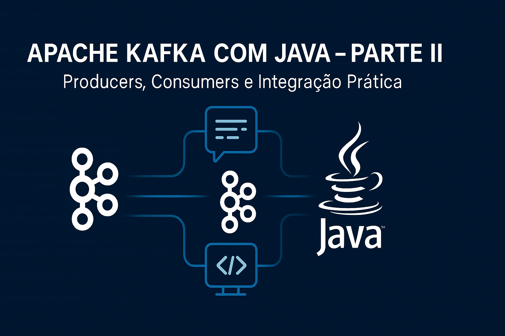

Esta parte mostra como integrar aplicações Java ao Apache Kafka, cobrindo desde a configuração do cliente até exemplos práticos de producers e consumers.
Os principais arquivos e diretórios desta parte estão em parte2-java/:
docker-compose.yml: ambiente Kafka para testes locaispom.xml: dependências Maven do projeto Javasrc/main/java/com/mulato/: código-fonte dos Producers e Consumerssrc/test/java/com/mulato/: testes automatizadostarget/: arquivos compilados e JAR gerado após buildConsulte cada pasta para exemplos completos e adapte conforme seu ambiente.
org.apache.kafka:kafka-clients<dependency>
<groupId>org.apache.kafka</groupId>
<artifactId>kafka-clients</artifactId>
<version>3.7.0</version>
</dependency>
Exemplo básico de envio de mensagens para um tópico Kafka:
Properties props = new Properties();
props.put("bootstrap.servers", "localhost:9092");
props.put("key.serializer", "org.apache.kafka.common.serialization.StringSerializer");
props.put("value.serializer", "org.apache.kafka.common.serialization.StringSerializer");
KafkaProducer<String, String> producer = new KafkaProducer<>(props);
ProducerRecord<String, String> record = new ProducerRecord<>("meu-topico", "chave", "mensagem");
producer.send(record);
producer.close();
Exemplo básico de leitura de mensagens de um tópico:
Properties props = new Properties();
props.put("bootstrap.servers", "localhost:9092");
props.put("group.id", "meu-grupo");
props.put("key.deserializer", "org.apache.kafka.common.serialization.StringDeserializer");
props.put("value.deserializer", "org.apache.kafka.common.serialization.StringDeserializer");
KafkaConsumer<String, String> consumer = new KafkaConsumer<>(props);
consumer.subscribe(Collections.singletonList("meu-topico"));
while (true) {
ConsumerRecords<String, String> records = consumer.poll(Duration.ofMillis(100));
for (ConsumerRecord<String, String> record : records) {
System.out.printf("offset = %d, key = %s, value = %s%n", record.offset(), record.key(), record.value());
}
}
A seguir, você encontra exemplos didáticos de Producer e Consumer em Java, ideais para quem está começando a integrar aplicações com o Apache Kafka. Os arquivos completos estão em:
parte2-java/src/main/java/com/mulato/PedidoProducer.java e parte2-java/src/main/java/com/mulato/PedidoConsumer.java.
1.Garanta que o Kafka está rodando em localhost:9092
Utilize o docker-compose.yml fornecido na pasta parte2-java/ para subir o ambiente local rapidamente:
docker-compose up -d
2.Compile o projeto Java com Maven
O projeto já possui um pom.xml pronto com todas as dependências necessárias. Basta rodar:
mvn clean compile
3.Execute o Producer para enviar mensagens
mvn exec:java -Dexec.mainClass="com.mulato.PedidoProducer"
O Producer simula o envio de pedidos para o tópico Kafka.
4.Execute o Consumer para ler as mensagens
mvn exec:java -Dexec.mainClass="com.mulato.PedidoConsumer"
O Consumer consome e imprime os pedidos recebidos.
Você pode modificar os exemplos para enviar múltiplos pedidos, testar diferentes tópicos ou experimentar com múltiplos consumidores para entender o funcionamento dos consumer groups.
O Producer é responsável por publicar mensagens (pedidos) em um tópico Kafka. Veja um exemplo básico:
Properties props = new Properties();
props.put("bootstrap.servers", "localhost:9092");
props.put("key.serializer", "org.apache.kafka.common.serialization.StringSerializer");
props.put("value.serializer", "org.apache.kafka.common.serialization.StringSerializer");
KafkaProducer<String, String> producer = new KafkaProducer<>(props);
ProducerRecord<String, String> record = new ProducerRecord<>("meu-topico", "chave", "mensagem");
producer.send(record);
producer.close();
O Consumer é responsável por ler as mensagens publicadas no tópico. Veja um exemplo básico:
Properties props = new Properties();
props.put("bootstrap.servers", "localhost:9092");
props.put("group.id", "meu-grupo");
props.put("key.deserializer", "org.apache.kafka.common.serialization.StringDeserializer");
props.put("value.deserializer", "org.apache.kafka.common.serialization.StringDeserializer");
KafkaConsumer<String, String> consumer = new KafkaConsumer<>(props);
consumer.subscribe(Collections.singletonList("meu-topico"));
while (true) {
ConsumerRecords<String, String> records = consumer.poll(Duration.ofMillis(100));
for (ConsumerRecord<String, String> record : records) {
System.out.printf("offset = %d, key = %s, value = %s%n", record.offset(), record.key(), record.value());
}
}
Dica: Experimente rodar múltiplos consumers no mesmo grupo para ver como o Kafka distribui as mensagens entre eles.
Esses exemplos são apenas para fins didáticos e funcionam em ambientes locais com o Kafka rodando no padrão (localhost:9092).
Para garantir que sua aplicação Java está realmente se comunicando com o Kafka, é fundamental realizar testes de integração. O projeto já inclui um exemplo realista em parte2-java/src/test/java/com/mulato/KafkaIntegrationTest.java.
Esse teste automatizado:
docker-compose up -d na pasta parte2-java/).pedidos usando um Producer.1.Suba o ambiente Kafka e Zookeeper
No terminal, dentro da pasta parte2-java/:
docker-compose up -d
2.Garanta que o tópico pedidos existe
Se necessário, crie o tópico executando dentro do container Kafka:
docker exec -it <nome_do_container_kafka> kafka-topics --bootstrap-server localhost:9092 --create --topic pedidos --partitions 1 --replication-factor 1
Use
docker pspara descobrir o nome do container Kafka.
3.Execute o teste com Maven
mvn test
O teste irá:
pedidos.4.Finalize o ambiente
Após os testes, pare os containers:
docker-compose down
O teste é didático e pode ser adaptado para outros tópicos, mensagens ou cenários de integração.
Para praticar e aprofundar os conceitos desta parte, consulte também o arquivo auxiliar:
exercicios-parte2.md — Exercícios práticos de integração Java + Kafka, implementação de Producer/Consumer, testes e espaço para anotações.Todo o conteúdo, exemplos práticos e arquivos de configuração desta parte estão disponíveis no repositório oficial do projeto no GitHub:
🔗 github.com/chmulato/kafka-java-mastery
Acesse, explore e contribua!